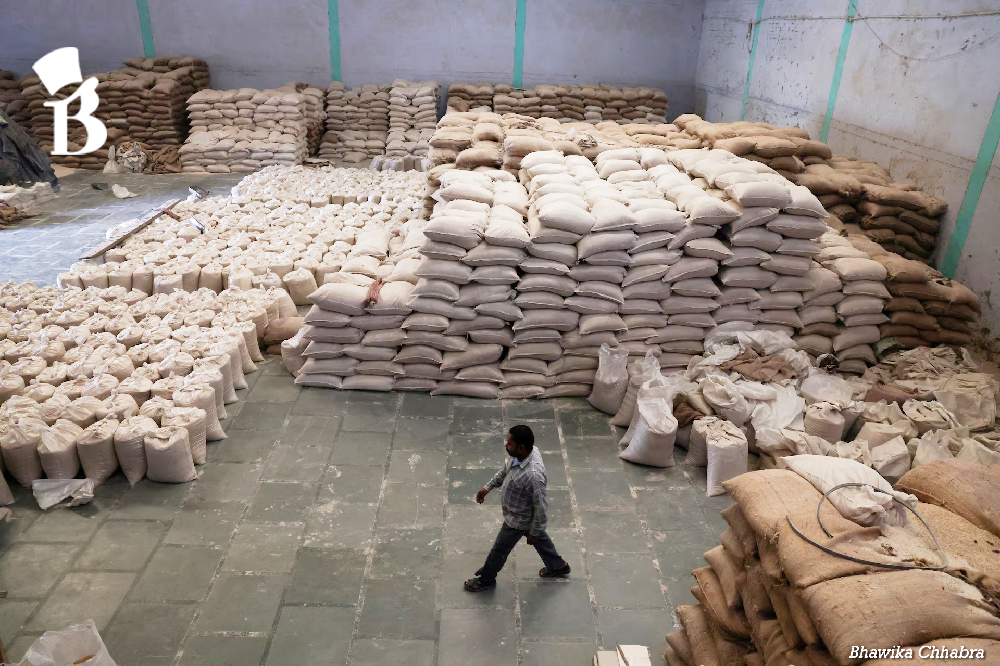

Cheaper at the pump, pricier at home: BSP sees November inflation hitting up to 8.2%
27 Nov 2026 · BNC / Bilyonaryo
The Bangko Sentral expects November inflation between 7.2% and 8.2%. It names higher electricity rates and cooking gas as the upward push. Lower local pump prices could ease some of it, and it says good supply could bring down rice, vegetable, meat and fish prices. BSP says it is also watching the Middle East.
Operator read: diners feel 8% inflation as smaller checks and fewer add-ons, while your LPG and power bills rise at the same time. Don't do a blanket menu price hike. Protect the value tier, re-price the items that eat the most gas (fryers, long braises), and run any oven or fryer that sits idle off-peak at lower settings. The official November number is due next week.
Open BNC

Why India's rising rice prices matter to Filipinos: Seven takeaways
27 Nov 2026 · Reuters via Bilyonaryo
India's average rice price rose 12.5% year on year in October even with record government stocks of 55.47 million tonnes. Those stocks are mostly common grades that don't replace the premium varieties consumers want. A weak monsoon means India's crop is expected to fall for the first time in a decade, and feed and ethanol makers are bidding for broken rice. India supplies nearly 40% of world rice trade. New Delhi could bring back a 20% duty on non-basmati exports, minimum export prices, or a ban on broken-rice exports. Vietnam, Thailand and Pakistan would gain share, and the Philippines buys mainly from Vietnam.
Operator read: an Indian curb lets Vietnam raise its prices, and our import price follows a few weeks later. Rice is unli on a lot of PH menus, so it's the cost you can't easily pass on. Ask your supplier for a fixed price through Q1, and know what a ₱2–3/kg rise does to an unli-rice plate before it happens.
Open Bilyonaryo